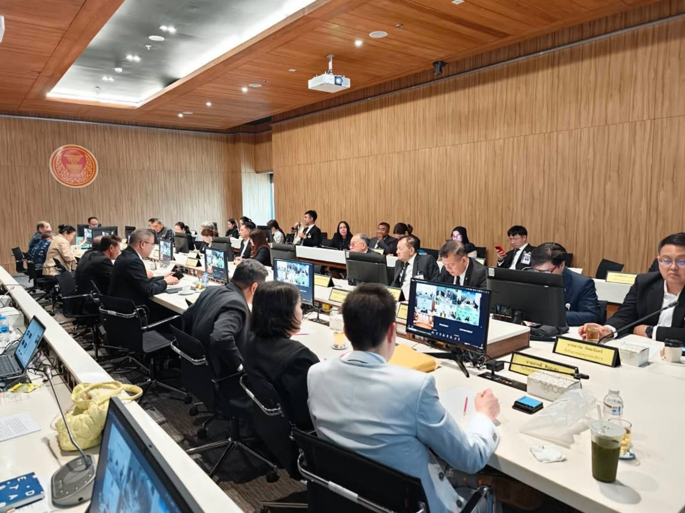
เมื่อวันพุธที่ 5 สิงหาคม 2569 คณะอนุกรรมาธิการส่งเสริมและพัฒนาด้านการท่องเที่ยวและการกีฬา วุฒิสภา จัดประชุม ณ ห้องประชุม CA 427 ชั้น 4 อาคารรัฐสภา (ฝั่งวุฒิสภา) โดยมีนายธัชชญาณ์ณัช เจียรธนัทกานนท์ เป็นประธานการประชุม พร้อมด้วยนายสุวิทย์ ขาวดี รองประธานคณะอนุกรรมาธิการ เข้าร่วมประชุม เพื่อพิจารณาแนวทางอำนวยความสะดวกในการเดินทางของนักท่องเที่ยว โดยเฉพาะการขยายเวลาเปิด–ปิดด่านศุลกากรวังประจัน จังหวัดสตูล และการแก้ไขปัญหาความล่าช้าในการตรวจคนเข้าเมือง ณ ด่านสะเดา จังหวัดสงขลา ซึ่งเป็นจุดเชื่อมโยงสำคัญด้านการท่องเที่ยว การค้า และเศรษฐกิจชายแดนระหว่างไทยกับมาเลเซีย
นายสุวิทย์ ขาวดี เปิดเผยว่า แม้รัฐบาลจะมีนโยบายชัดเจนในการสนับสนุนการท่องเที่ยวข้ามแดนและเศรษฐกิจการค้าชายแดน แต่ในทางปฏิบัติยังมีอุปสรรคที่จำเป็นต้องเร่งแก้ไข โดยเฉพาะข้อจำกัดด้านเวลาเปิด–ปิดด่าน ซึ่งส่งผลต่อความสะดวกของประชาชนและนักท่องเที่ยวทั้งสองประเทศ รวมถึงกระทบต่อโอกาสในการเดินทาง การใช้จ่าย และกิจกรรมทางเศรษฐกิจในพื้นที่ชายแดน นอกจากนี้ ยังมีข้อจำกัดด้านโครงสร้างพื้นฐานและสิ่งอำนวยความสะดวกที่จำเป็น ซึ่งประชาชนในพื้นที่ได้สะท้อนปัญหาและเสนอให้หน่วยงานภาครัฐเร่งดำเนินการแก้ไขอย่างเป็นรูปธรรม
สำหรับด่านศุลกากรวังประจัน คณะอนุกรรมาธิการเดินหน้าผลักดันการขยายเวลาเปิดจุดผ่านแดนจากเดิม 18.00 น. เป็น 20.00 น. เพื่อเพิ่มความสะดวกในการเดินทางข้ามแดน สนับสนุนการท่องเที่ยวและการค้าชายแดน ตลอดจนเพิ่มโอกาสเชื่อมโยงเส้นทางระหว่างจังหวัดสตูลกับประเทศมาเลเซีย โดยกระทรวงมหาดไทยและสภาความมั่นคงแห่งชาติได้เห็นชอบในหลักการแล้ว หลังประเมินว่าไม่มีความเสี่ยงด้านความมั่นคงที่มีนัยสำคัญ ขณะที่จังหวัดสตูลมีความพร้อมด้านระบบไฟฟ้า สิ่งอำนวยความสะดวก และกำลังเจ้าหน้าที่ ปัจจุบันอยู่ระหว่างการประสานหน่วยงานของมาเลเซียเพื่อพิจารณาดำเนินการร่วมกัน ทั้งนี้ ที่ประชุมยังเสนอให้พิจารณาแนวทางการใช้บัตรประชาชนเพียงใบเดียวในการเดินทางข้ามแดน และผลักดันพื้นที่ซื้อขายเสรี (Free Flow Zone) ในรัศมี 2 กิโลเมตรจากชายแดน เพื่อเพิ่มความคล่องตัวในการเดินทางและกระตุ้นเศรษฐกิจในพื้นที่
ขณะเดียวกัน กรณีด่านสะเดา จังหวัดสงขลา คณะอนุกรรมาธิการได้ติดตามและผลักดันแนวทางแก้ไขปัญหาความล่าช้าในการผ่านแดน โดยเฉพาะการเปิดใช้ถนนเชื่อมต่อด่านสะเดาแห่งใหม่กับด่านบูกิตกายูฮิตัม ประเทศมาเลเซีย ซึ่งเพิ่มช่องตรวจรวมกว่า 20 ช่อง พร้อมนำระบบสารสนเทศมาใช้ตรวจสอบยานพาหนะและเปิดให้กรอกข้อมูลล่วงหน้าผ่านระบบอิเล็กทรอนิกส์ ช่วยลดระยะเวลาในการผ่านพิธีการและบรรเทาความแออัดบริเวณด่าน
ทั้งนี้ คณะอนุกรรมาธิการฯ เน้นย้ำให้หน่วยงานที่เกี่ยวข้องเร่งประสานความร่วมมือกับฝ่ายมาเลเซียอย่างใกล้ชิด พร้อมเสนอให้จัดตั้งกลไกการทำงานร่วมไทย–มาเลเซีย (Working Group) เพื่อแก้ไขปัญหาการผ่านแดนอย่างเป็นระบบและติดตามความคืบหน้าอย่างต่อเนื่อง โดยนายสุวิทย์ ขาวดี และคณะอนุกรรมาธิการฯ มุ่งผลักดันให้การพัฒนาด่านชายแดนไม่ได้จำกัดเพียงการอำนวยความสะดวกในการเดินทาง แต่ต้องเชื่อมโยงไปสู่การส่งเสริมการท่องเที่ยว การค้า การลงทุน และการสร้างรายได้ให้กับประชาชนในพื้นที่ อันจะเป็นกลไกสำคัญในการยกระดับเศรษฐกิจชายแดนไทย–มาเลเซียให้เติบโตอย่างมีประสิทธิภาพและยั่งยืน
ภาพบรรยากาศการประชุม
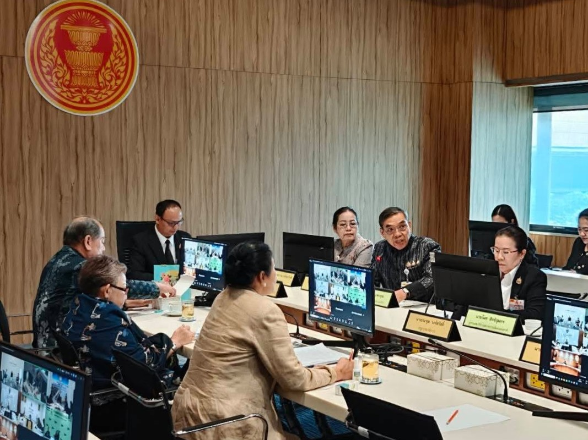
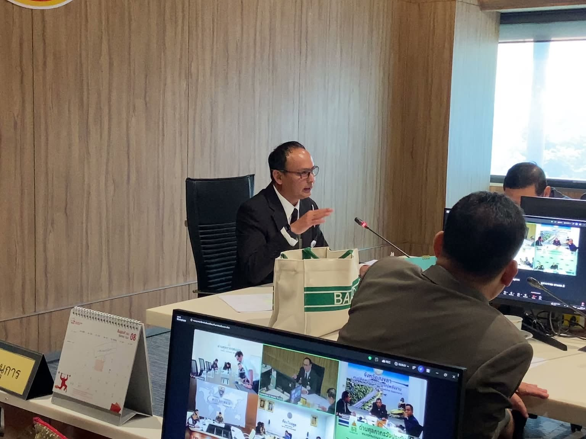
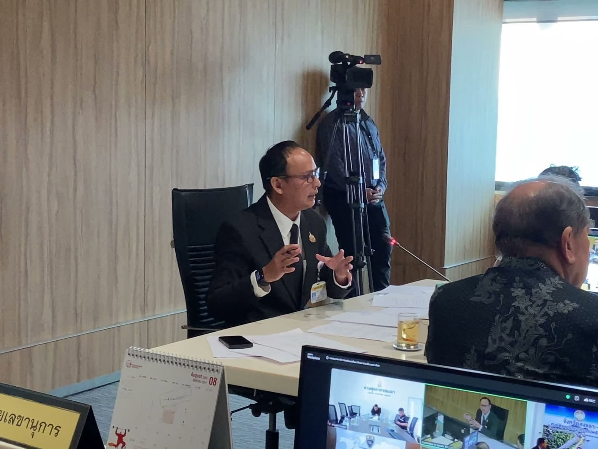
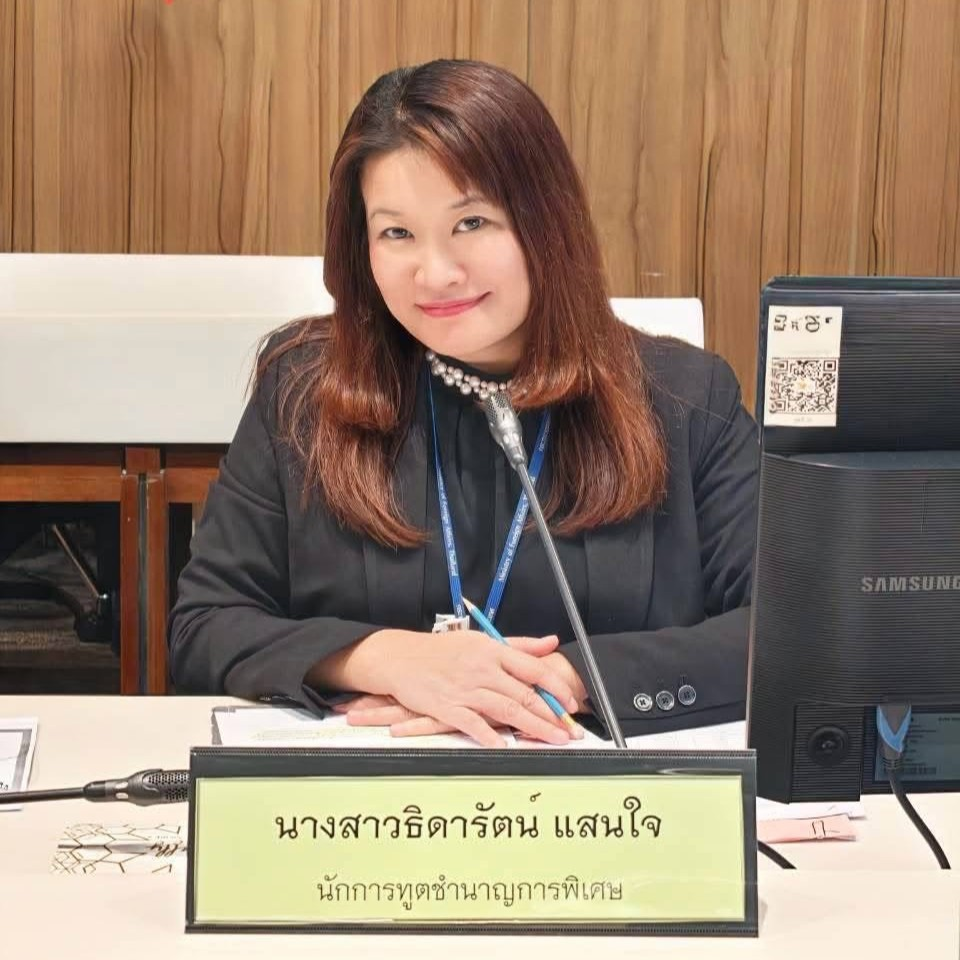
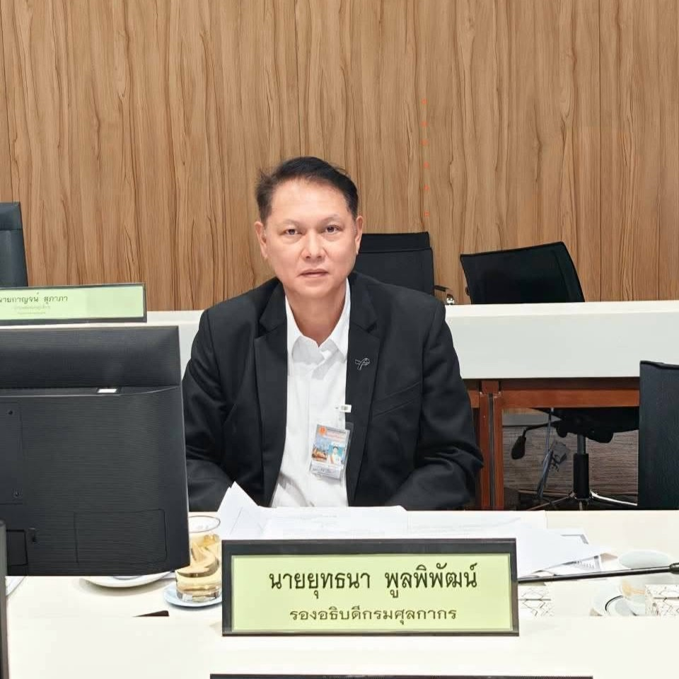
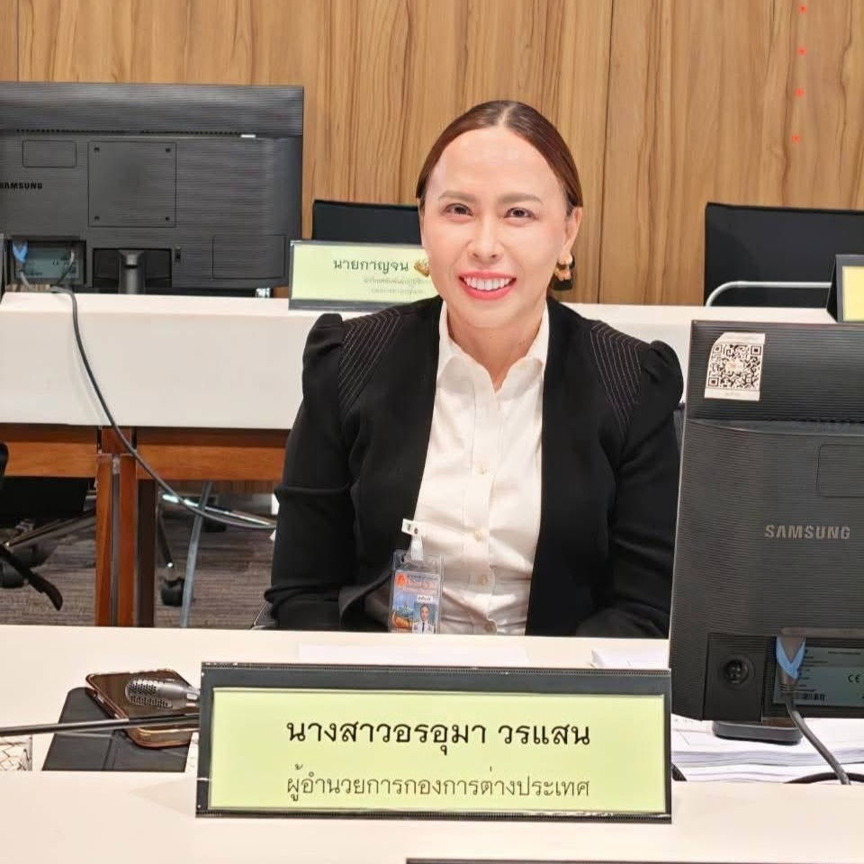
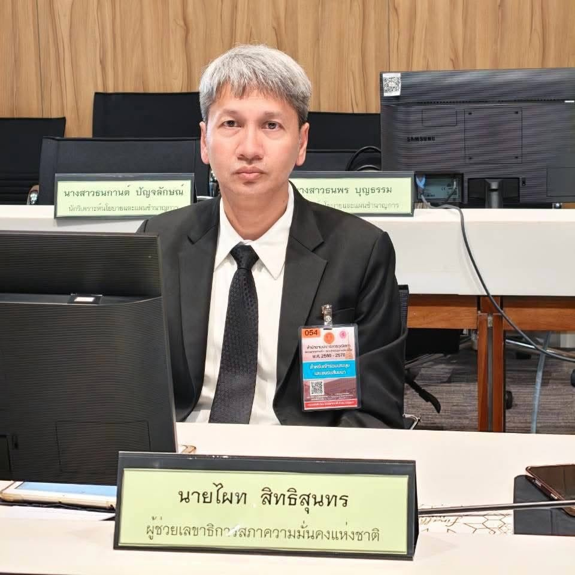
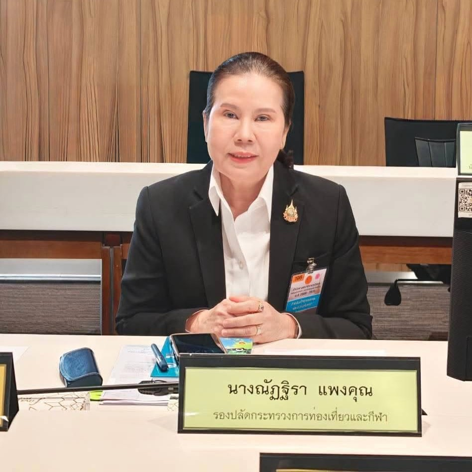
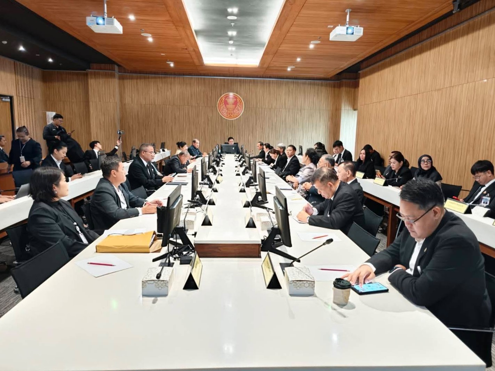
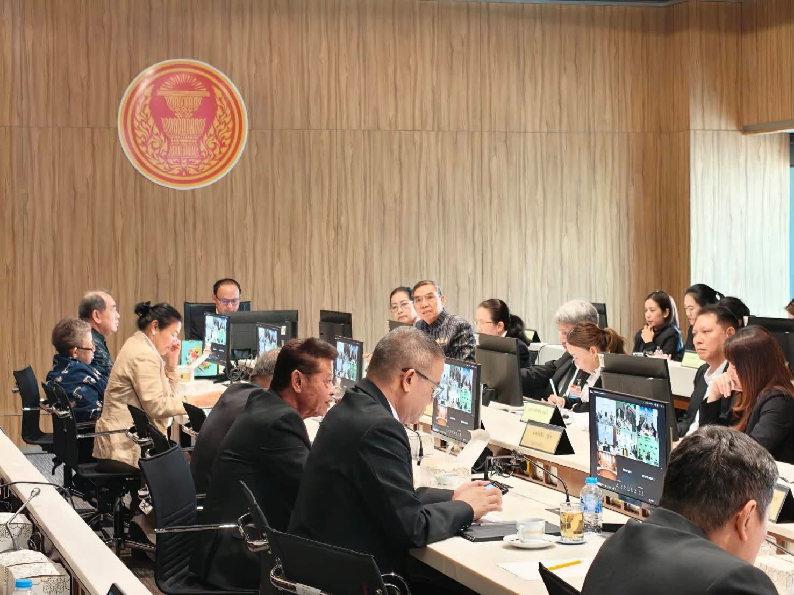